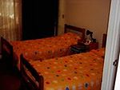

De: La Frikipedia, la enciclopedia extremadamente seria.
De: La Frikipedia, la enciclopedia extremadamente seria. De: La Frikipedia, la enciclopedia extremadamente seria.

|
FRIKIPEDIA QUIERE QUE ESTA DEFINICIÓN
PASE A SER UN ARTÍCULO FRIKIPÉDICO La información contenida en este artículo es una mínima parte de su jugo total, así que ponte los guantes, saca el tupperwere y empieza a exprimir el tema. Si lo haces serás recompensado con una galleta en almíbar y algo más. |
| De la serie Países del planeta tierra: | |||||
| Unión de Repúblicas Socialistas Soviéticas: El Regreso | |||||
|---|---|---|---|---|---|
| |||||
| Lema: All you need is comunism | |||||
| Himno: Stalin loves you yeaa yeaa yeaa
| |||||
| 
| |||||
| Capital | La cama izquierda | ||||
| Mayor ciudad | Ciudad? Apenas si existen | ||||
| Lenguas oficiales | {{{lenguas_oficiales}}} | ||||
| Gobierno | Comunista con tendencias al frikismo | ||||
| {{{título_líder}}} | {{{nombre_líder}}} | ||||
| Área | Aproximadamente 3.20 x 3.50 metros (julio de 2009), pero crecerá hasta dominar el mundo | ||||
| Población | Unos 15 habitantes | ||||
| Moneda | Vodka | ||||
| Zona horaria | Depende de la hora | ||||
| Dominio Internet | .che | ||||
| Código telefónico | 54
| ||||
| Es un gran país, la principal area turistica se encuentra en el inodoro. | |||||
La URSS 2.0 es un país en crecimiento (mide menos de 4x4) fundado por el camarrada John Lenin algún día del año 38 d.m.j. (después de Michael Jordan).
Autor(es):